Reserve-a-Lab performance report
Branch perf/lighthouse-optimization, measured on local XAMPP on 19 October 2026 with Lighthouse 12.8 and Playwright 1.64 (Chrome). Same 9 pages, same test accounts and same request (ID 48) before and after.
Mobile averages cover the 8 pages Lighthouse could score both times. The login page is left out of them: it could not be scored on mobile before (Lighthouse error NO_FCP) and scores 100 now.
Mobile performance score per page
Lighthouse, mobile
Simulated mid-range phone on a slow 4G connection (Lighthouse default). Median of 3 runs per page.
| Page | Score | FCP | LCP | TBT | CLS | Page weight | Requests | Reports |
|---|---|---|---|---|---|---|---|---|
| Login | failed → 100 | — → 1.1 s | — → 1.5 s | — → 0 ms | — → 0.009 | — → 140 KB | — → 5 | before after |
| About | 53 → 77 | 4.8 s → 2.4 s | 17.7 s → 5.5 s −12.2 s | 345 → 0 ms | 0 → 0 | 6.3 MB → 979 KB | 52 → 20 | before after |
| Requester home | 61 → 85 | 4.5 s → 2.3 s | 8.2 s → 4.0 s −4.3 s | 123 → 0 ms | 0 → 0 | 1.4 MB → 656 KB | 42 → 26 | before after |
| Request form | 61 → 89 | 5.3 s → 2.7 s | 7.5 s → 3.2 s −4.3 s | 124 → 0 ms | 0 → 0.018 | 1.0 MB → 346 KB | 34 → 19 | before after |
| Request tracker | 64 → 88 | 4.5 s → 2.9 s | 6.5 s → 3.2 s −3.3 s | 77 → 0 ms | 0 → 0 | 859 KB → 319 KB | 29 → 21 | before after |
| Teacher approval | 63 → 92 | 4.8 s → 2.6 s | 6.9 s → 2.9 s −4.1 s | 0 → 0 ms | 0 → 0 | 901 KB → 305 KB | 31 → 14 | before after |
| Admin home | 61 → 84 | 4.6 s → 2.4 s | 8.4 s → 4.0 s −4.4 s | 103 → 0 ms | 0 → 0 | 1.4 MB → 658 KB | 41 → 25 | before after |
| Admin approvals | 62 → 88 | 4.8 s → 2.9 s | 6.9 s → 3.2 s −3.7 s | 132 → 0 ms | 0 → 0 | 902 KB → 332 KB | 30 → 23 | before after |
| Inventory | 62 → 85 | 5.2 s → 2.9 s | 7.2 s → 3.5 s −3.7 s | 78 → 133 ms | 0 → 0 | 1008 KB → 380 KB | 30 → 23 | before after |
Lighthouse, desktop
| Page | Score | FCP | LCP | TBT | CLS | Page weight | Requests | Reports |
|---|---|---|---|---|---|---|---|---|
| Login | 94 → 100 | 1.2 s → 0.3 s | 1.2 s → 0.3 s −0.9 s | 0 → 0 ms | 0 → 0.002 | 425 KB → 140 KB | 7 → 6 | before after |
| About | 83 → 99 | 1.2 s → 0.5 s | 2.6 s → 1.0 s −1.6 s | 0 → 0 ms | 0 → 0 | 6.3 MB → 979 KB | 52 → 20 | before after |
| Requester home | 89 → 100 | 1.1 s → 0.5 s | 1.9 s → 0.7 s −1.2 s | 0 → 0 ms | 0 → 0 | 1.5 MB → 377 KB | 43 → 27 | before after |
| Request form | 91 → 100 | 1.2 s → 0.6 s | 1.6 s → 0.7 s −0.9 s | 0 → 0 ms | 0.022 → 0.001 | 1.0 MB → 346 KB | 34 → 19 | before after |
| Request tracker | 93 → 100 | 1.1 s → 0.6 s | 1.4 s → 0.7 s −0.7 s | 0 → 0 ms | 0.001 → 0 | 859 KB → 319 KB | 29 → 21 | before after |
| Teacher approval | 92 → 100 | 1.2 s → 0.6 s | 1.5 s → 0.6 s −0.8 s | 0 → 0 ms | 0 → 0 | 901 KB → 305 KB | 31 → 14 | before after |
| Admin home | 92 → 100 | 1.1 s → 0.5 s | 1.7 s → 0.7 s −1.0 s | 0 → 0 ms | 0 → 0 | 1.5 MB → 379 KB | 42 → 26 | before after |
| Admin approvals | 93 → 100 | 1.1 s → 0.6 s | 1.4 s → 0.7 s −0.8 s | 0 → 0 ms | 0.002 → 0 | 902 KB → 332 KB | 30 → 23 | before after |
| Inventory | 92 → 100 | 1.2 s → 0.6 s | 1.5 s → 0.7 s −0.8 s | 0 → 0 ms | 0.002 → 0 | 1008 KB → 380 KB | 30 → 23 | before after |
Real slow-connection test
Chrome with real throttling: 1.6 Mbps down, 750 Kbps up, 150 ms latency, CPU slowed 4×, empty cache, 390 px phone screen.
| Page | First paint (FCP) | Main content (LCP) | Fully loaded | Downloaded | Requests |
|---|---|---|---|---|---|
| Login | 1.6 s → 0.5 s | 1.8 s → 0.5 s −1.2 s | 2.1 s → 0.9 s −1.3 s | 339 KB → 140 KB | 4 → 5 |
| About | 4.7 s → 1.7 s | 16.2 s → 3.2 s −13.0 s | 31.8 s → 3.2 s −28.6 s | 6.3 MB → 594 KB | 50 → 17 |
| Requester home | 3.6 s → 1.4 s | 3.6 s → 2.0 s −1.6 s | 6.7 s → 2.3 s −4.3 s | 636 KB → 371 KB | 31 → 22 |
| Request form | 3.2 s → 1.6 s | 6.2 s → 1.6 s −4.6 s | 7.0 s → 2.2 s −4.9 s | 758 KB → 358 KB | 27 → 16 |
| Request tracker | 3.9 s → 1.7 s | 6.1 s → 1.7 s −4.3 s | 6.2 s → 2.2 s −4.0 s | 607 KB → 331 KB | 26 → 21 |
| Teacher approval | 3.7 s → 1.5 s | 5.5 s → 1.5 s −4.0 s | 7.6 s → 2.0 s −5.6 s | 870 KB → 317 KB | 28 → 14 |
| Admin home | 3.1 s → 1.3 s | 3.1 s → 1.9 s −1.2 s | 5.6 s → 2.3 s −3.3 s | 650 KB → 373 KB | 31 → 22 |
| Admin approvals | 2.8 s → 1.7 s | 5.3 s → 1.7 s −3.6 s | 5.9 s → 2.2 s −3.8 s | 649 KB → 344 KB | 27 → 23 |
| Inventory | 3.2 s → 1.6 s | 6.3 s → 1.6 s −4.7 s | 7.5 s → 2.3 s −5.3 s | 756 KB → 392 KB | 27 → 23 |
Functional checks
Automated Playwright checks per page: libraries load, tables and widgets initialise, and interactions work (login error, calendar, profile menu, password modal, lab gallery, table search, barcode scanner).
| Page | Checks | Before | After | JS errors | Failed requests |
|---|---|---|---|---|---|
| Login | 3 | all passed | all passed | 0 → 0 | 0 → 0 |
| About | 7 | all passed | all passed | 0 → 0 | 2 → 0 |
| Requester home | 8 | all passed | all passed | 6 → 6 | 8 → 6 |
| Request form | 8 | all passed | all passed | 0 → 0 | 2 → 0 |
| Request tracker | 7 | all passed | all passed | 0 → 0 | 2 → 0 |
| Teacher approval | 2 | all passed | all passed | 0 → 0 | 2 → 0 |
| Admin home | 8 | 2 failed | all passed | 6 → 6 | 8 → 6 |
| Admin approvals | 8 | all passed | all passed | 0 → 0 | 2 → 0 |
| Inventory | 9 | all passed | all passed | 0 → 0 | 2 → 0 |
Admin home “2 failed” before: both were faults in the first version of the test, not in the site (one clicked a button covered by another element, the other waited for the wrong dialog). The corrected test passes on the current site. The remaining JS errors and failed requests on the two home pages are the three missing lab images listed under known issues.
What changed
Scripts and stylesheets
- All libraries are served from the site itself instead of 6 different CDNs (jQuery 3.3.1, Bootstrap 3.3.7, Bootstrap Icons 1.10.5, DataTables 1.13.6 + Responsive + Select, bootstrap-multiselect 0.9.13, Quagga2 1.12.1). Versions are unchanged.
- Pages now load only the libraries they use (
$pageAssetsinhelperFiles/headData.php): DataTables only on the tracker, approvals and inventory pages; multiselect only on the request form and approvals; the barcode scanner only on inventory, deferred. - Removed the second copy of the barcode scanner (two versions were loading on every page) and the JsBarcode library, which no page used.
- The calendar library (123 KB) loads only when “View Calendar” is first clicked, instead of blocking every page.
- Removed the bootstrap-multiselect stylesheet link, which had always returned 404.
- Deleted two files nothing referenced:
helperFiles/HeadFoot.css,helperFiles/tables.js. - Local CSS and JS files carry a
?v=version, so browsers can cache them for a year and still pick up edits.
Fonts
- Raleway, Inter, Playfair Display and Plus Jakarta Sans are self-hosted as WOFF2 with
font-display: swap(the same files Google Fonts served). - The fonts used for the first text on screen are preloaded.
Images
- Every image under
img/was recompressed in place, keeping names and formats, so database paths and galleries still work: 137.4 MB → 17.2 MB. - WebP copies (and 640 px thumbnails) live in
img/_opt/; the server sends the WebP automatically to browsers that support it, with no change to any URL. - New uploads are downsized to 1920 px and get WebP copies automatically (
helperFiles/image_optimizer.php, hooked into every upload, replace, rename and delete path).tools/optimize_images.phprebuilds the copies from the command line. - Lab cards use
<picture>with WebP sources; the first visible card photo loads at once with high priority (it is the largest element on the home pages), the rest load as you scroll. - About page: the hero image is preloaded; team and gallery photos load as you scroll and have width and height, so nothing jumps.
img/logo.png: 248 KB → 24 KB (320 × 320, transparency kept).
Layout shifts, LCP and interaction
- Login page: the card and side panel no longer fade in from fully transparent (they still slide in). Lighthouse could not measure the page on mobile before (NO_FCP).
- Request form: the two multi-select boxes get their final height before the plugin runs, so the form no longer jumps; the header background (the largest element) is preloaded.
- Header and footer logos have width and height; the footer logo loads lazily.
Server (Apache)
- Enabled mod_brotli, mod_deflate, mod_expires and mod_filter in
C:\xampp\apache\conf\httpd.conf(backup:httpd.conf.bak-perf). - New
.htaccess: Brotli or gzip compression for text files; cache headers (1 year for versioned files, fonts and vendor files, 30 days for images, 1 day for other CSS/JS, nothing added for PHP pages); WebP negotiation; web access totools/blocked. Every block is guarded with<IfModule>, so the file is safe on a server without those modules.
Known issues, fixed
Fixed on branch fix/known-issues (based on perf/lighthouse-optimization). Checked on 20 October 2026 with Playwright (32 targeted checks plus the 9-page functional suite, all passing, 0 JS errors and 0 failed requests on every page) and Lighthouse (median of 3 runs).
| Issue | Fix | Checked |
|---|---|---|
Security: the database backup helperFiles/db_back_scilab_context.sql and composer.lock could be downloaded; folders without an index page listed their files. | .htaccess returns 403 for .sql .lock .md .log .bak .ini .env .sh .ps1 .py .cjs .mjs, composer.json, package*.json, dotfiles (.git/), Windows 8.3 short names (DB_BAC~1.SQL), vendor/, graphify-out/, videos/, and folders without an index page. Built only with mod_rewrite [F], so it needs no AllowOverride beyond what the file already used. | 403 for every private URL tested (incl. upper case, trailing dot/space, ::$DATA, short names); 200 for pages, CSS, JS, fonts, images and the PDFs. |
Three lab records point to images that do not exist (lab2.jpg, lab3.jpg, lab4.jpg): 404s on both home pages. | New ral_lab_main_image() (helperFiles/image_optimizer.php): when the stored path is missing it uses img/labimages/<lab name>.jpg, the name the upload code gives the main photo. Both home pages use it. The database is unchanged; editing a lab rewrites its path anyway. | All 8 lab cards load their photo on both home pages; JS errors 6 → 0, failed requests 6 → 0. |
The calendar called ec.updateSize(), which EventCalendar 4.7.1 does not have: errors on filter change, reopen and every window resize. | Removed both calls (helperFiles/calendar.php). EventCalendar 4 sizes itself with CSS, so setting the events is enough. | Open, change the lab filter, close, reopen, resize: no errors on either home page. |
reset_password.php called showToast, which only existed in the footer that page does not include. | The toast container and showToast() moved to helperFiles/toast.php, included by the footer and by reset_password.php (inline, no extra request). | Mismatched passwords show the warning toast; the server reply shows a toast; no errors. |
forms.php registered a DOMContentLoaded listener inside jQuery's ready handler, so it never ran. | The code now runs directly: date minimum, session date, unavailable-date check on input and the unavailable-date lookup for the default facility. The session date is written into the script with json_encode. | Unavailable dates are requested at page load; the date minimum is today; no errors. |
In ajax/ajax_admin.php the first gallery-upload handler caught every upload, so upload_gallery_images was never reached. | One handler, matched on action=upload_gallery_images. It keeps the working folder logic (the unreachable one stripped spaces and would have saved into ScienceLaboratory1/), checks each upload, and adds _2, _3… instead of overwriting a photo with the same name. | Uploading a photo whose name already exists saved it as _2, left the original byte-identical and built its WebP copies; deleting it removed the file and the copies. |
| Inventory, mobile: blocking time from building the 521-row table at page load. | Rows are handed to DataTables as data with deferRender, so only the 10 rows on screen get DOM nodes. Cell contents are unchanged, so search, sort, edit mode and the scanner behave as before. | Blocking time at 4× CPU, median of 9 loads: 469 → 363 ms; longest task 464 → 356 ms. Search, sort, paging, tabs, edit button and edit mode checked. On phones the column widths differ by about 2 px (DataTables now measures the header before the rows exist), so a few long names wrap differently. |
| Layout shift on mobile: login 0.009 (Inter swapping in), request form 0.018. | Login: an Inter Fallback face (local Arial scaled to Inter's widths and line metrics) is shown until Inter arrives. Request form: on phones the form container had width:auto with auto margins inside the flex body, so it grew from 372 to 390 px once the material rows were added; it is now full width from the start. | Lighthouse mobile CLS: login 0.009 → 0, request form 0.018 → 0. Slow-connection trace: the form container no longer moves. |
| Next step: a 1280 px image size so phones do not pick the full-size photo. | The WebP copies now include .1280w.webp for images wider than 1280 px (img/_opt/, 65 new files); lab cards list it in srcset. tools/optimize_images.php builds it and no longer treats it as an orphan; uploads build it automatically. | Existing WebP files rebuilt byte-identical; only the new sizes were added. |
| Next step: WebP thumbnails for the About page photos. | The 25 team, timeline and gallery photos use <picture> with 640/1280 px WebP sources (ral_img_picture()). The rendered <img> tags are identical to before, and the lightbox still opens the full-size photo. | All About photos after scrolling: 2.7 MB → 748 KB on desktop, 1.6 MB on a 3× phone. Lighthouse mobile: score 77 → 80, LCP 5.5 → 4.8 s, page weight 979 → 739 KB. |
The home pages now download about 20 KB more on mobile, because the three lab photos that used to fail now load.
Screenshots, before and after
Full-page screenshots after the page settled. Click a screenshot to open it full size.
Login


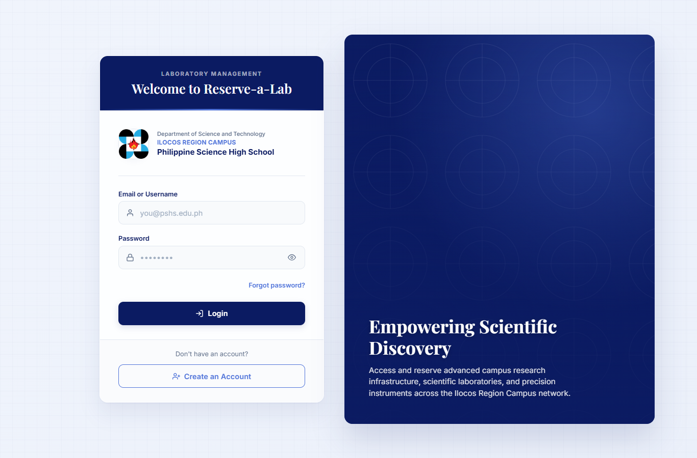


About


Requester home


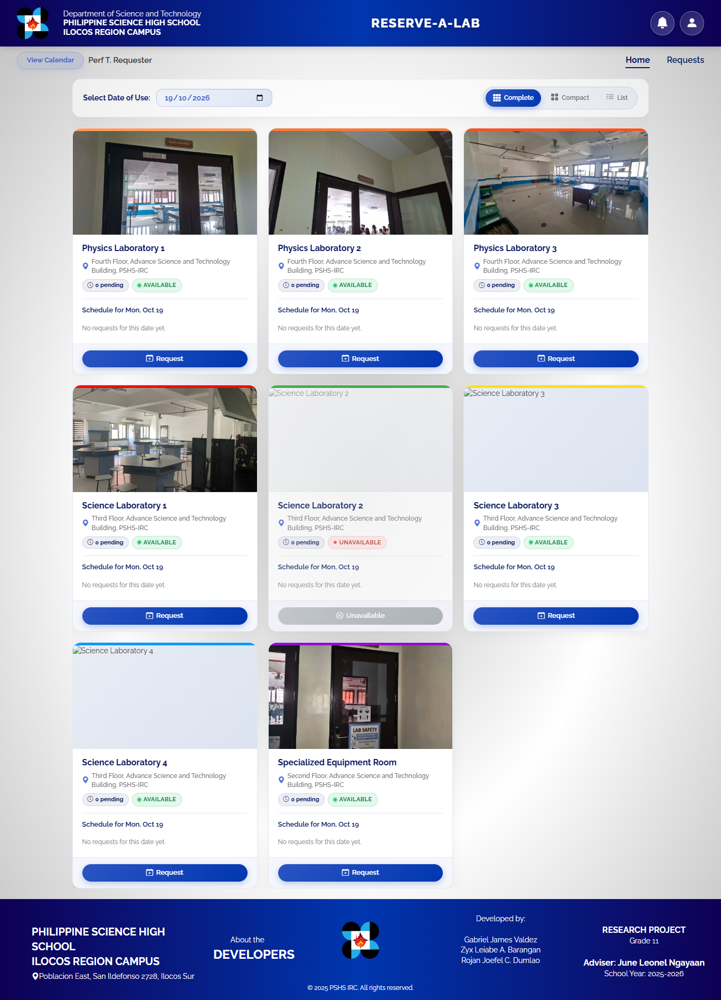

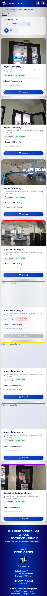

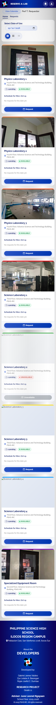
Request form


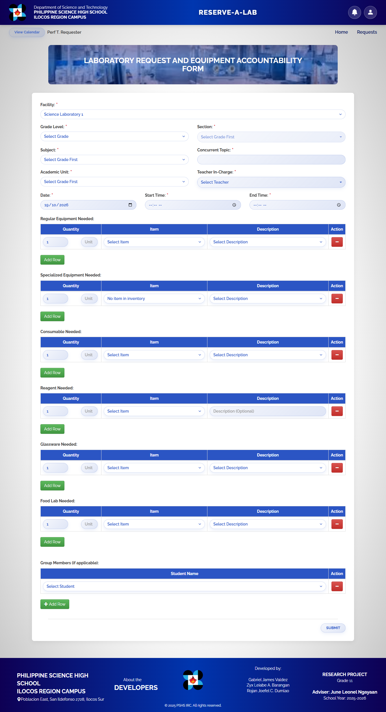


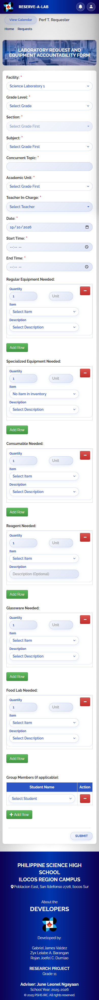
Request tracker


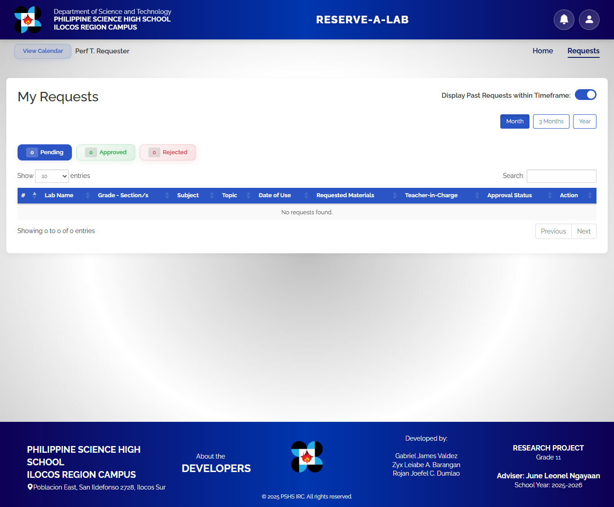

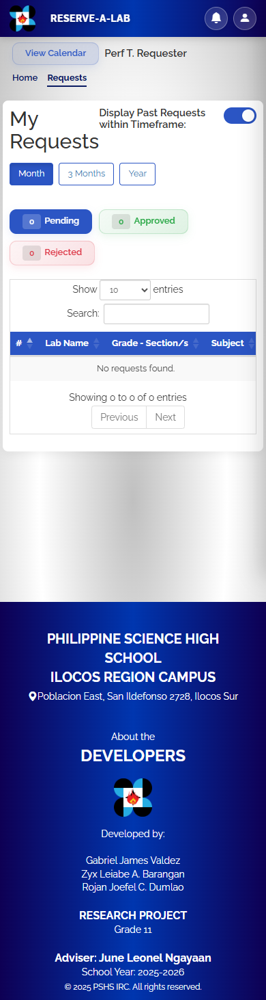

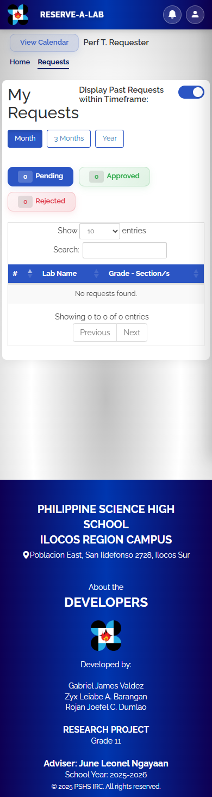
Teacher approval

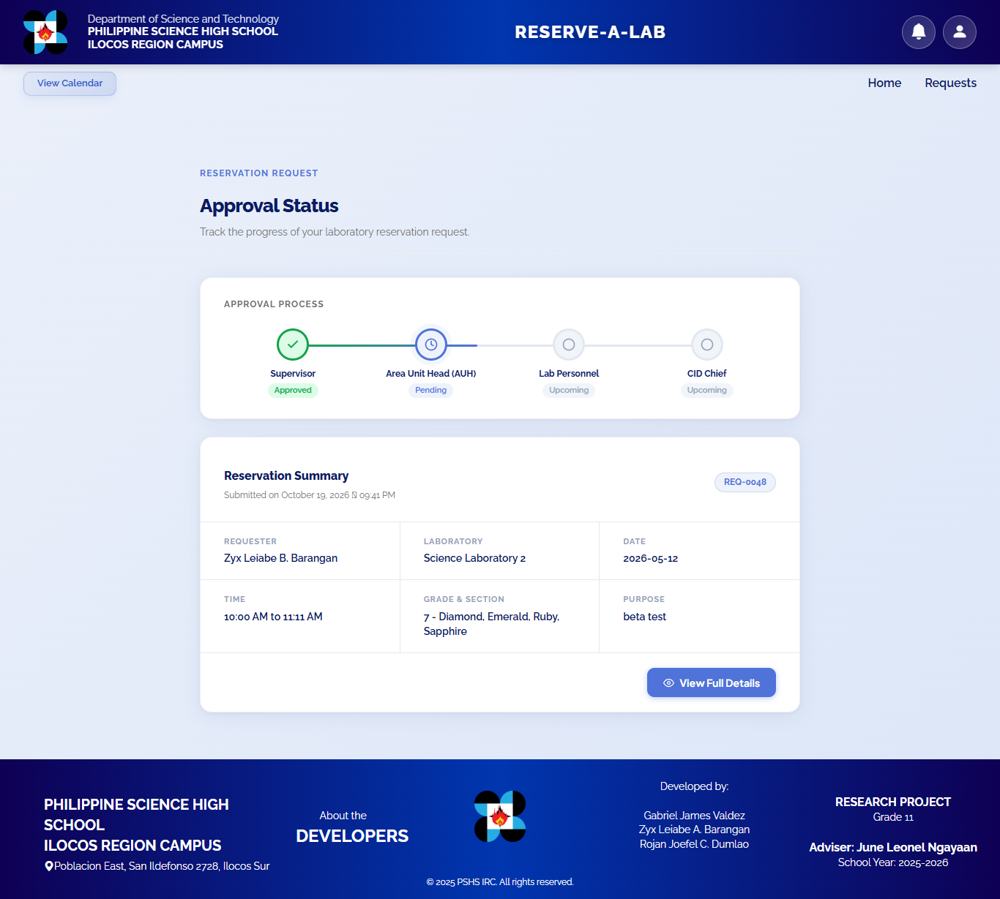


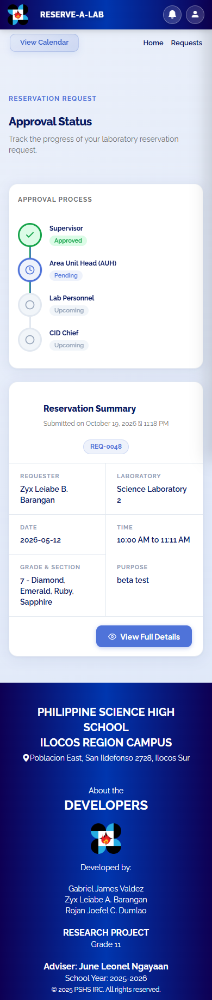
Admin home


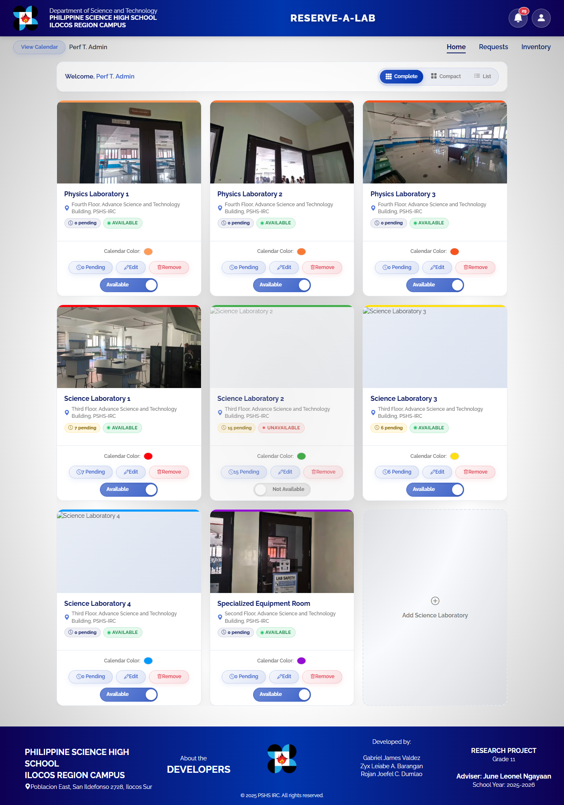

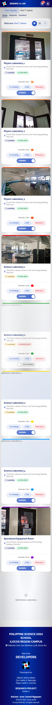

Admin approvals


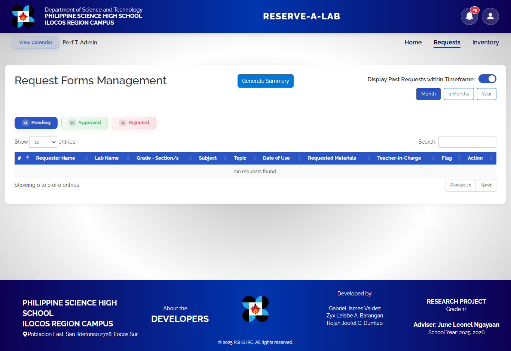

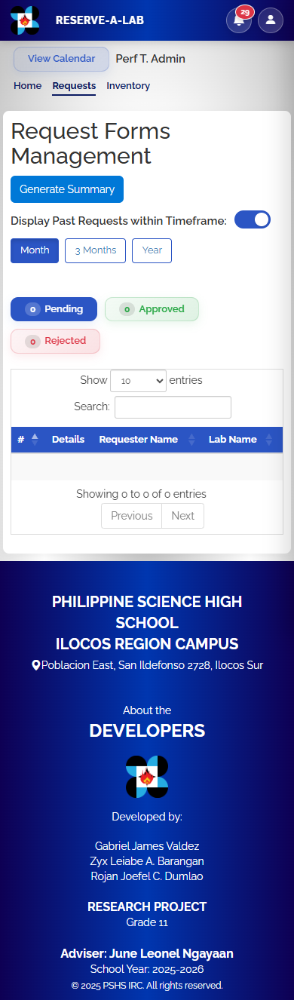

Inventory

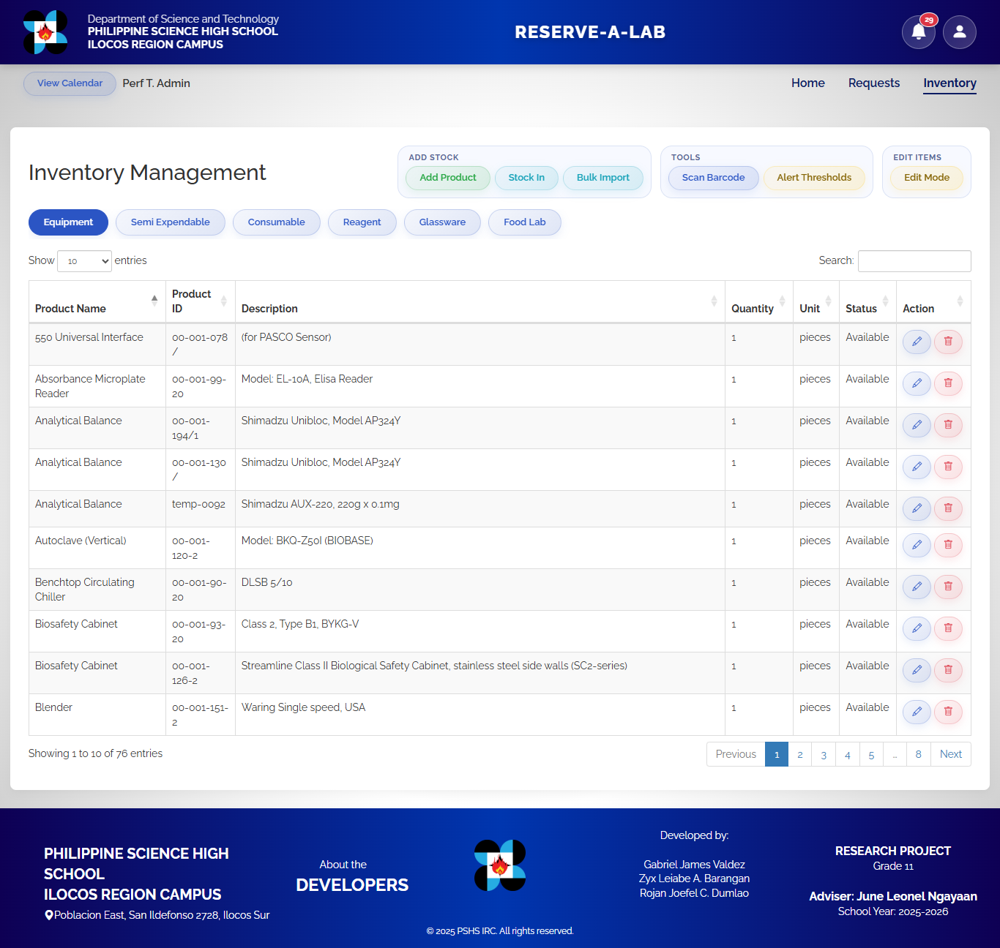

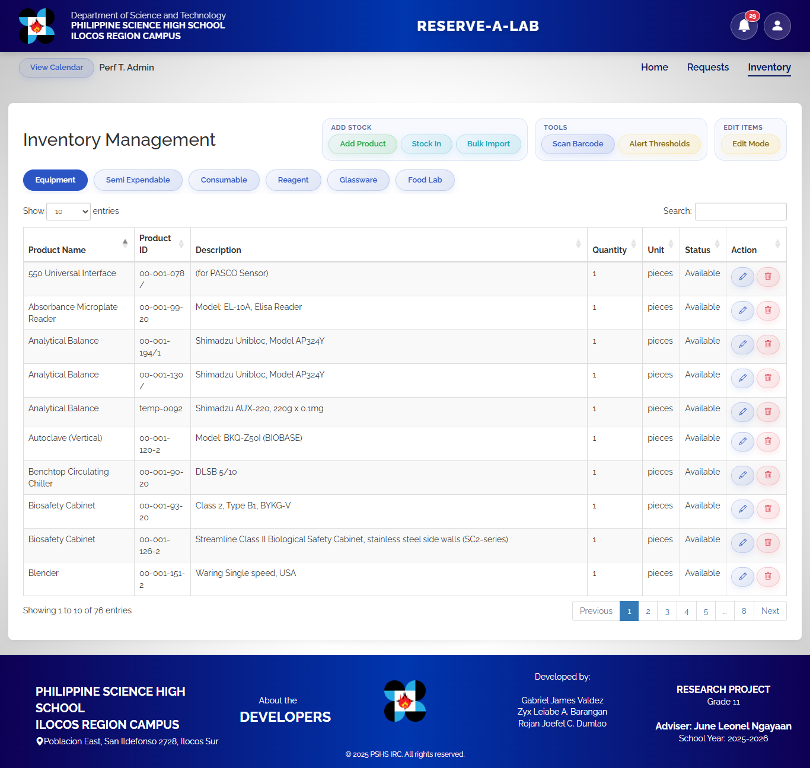

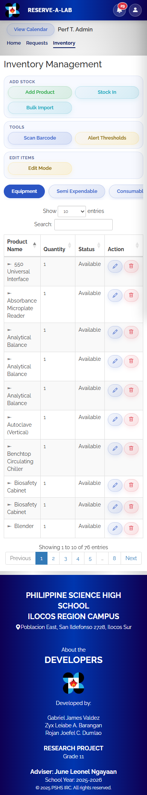

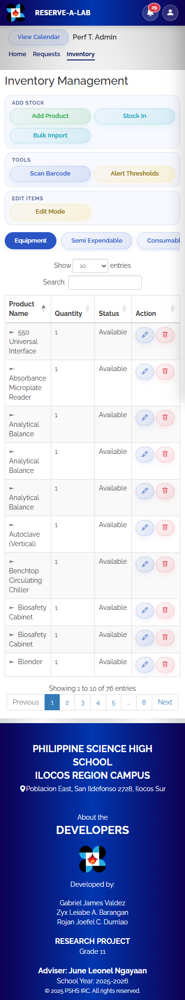
Before: commit a86d973 on main. After: uncommitted changes on branch perf/lighthouse-optimization. Lighthouse runs on localhost, so server response time is near zero; on the school server the absolute times will be higher, but the savings in downloaded bytes and blocking requests carry over.